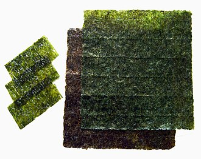

のり（海苔）の生産量 都道府県ランキング
1位から3位までと、とれた量
のりが日本でいちばん多く育てられているのは兵庫県です。4万9,368 tで、全国（19万5,048 t）の25%を占めます。

| 順位 | 都道府県 | 収獲量 | 全国に占める割合 |
|---|---|---|---|
| 1位 | 兵庫県 | 4万9,368 t | 25% |
| 2位 | 佐賀県 | 4万2,662 t | 22% |
| 3位 | 福岡県 | 2万7,462 t | 14% |
この数字について
- 分類：海藻の仲間
- 全国の収獲量：19万5,048 t
- この数字が表すもの：収獲量（養殖で育てて取り上げた重さ）
- 調査：海面漁業生産統計調査（海面養殖業） 令和6年
- この品目は養殖の統計です。
- 20県分を調査（調査していない県は順位に入りません）
のりの生産量について、よくある質問
- のりの生産量が日本一の都道府県はどこですか？
- 兵庫県です。海面漁業生産統計調査（海面養殖業）（令和6年）で4万9,368 tでした。
- のりの生産量ランキング2位・3位はどこですか？
- 2位は佐賀県（4万2,662 t）、3位は福岡県（2万7,462 t）です。
- のりの全国の生産量はどれくらいですか？
- 19万5,048 t（令和6年）です。